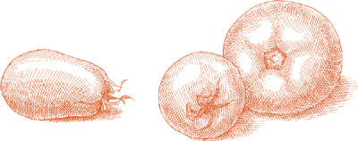
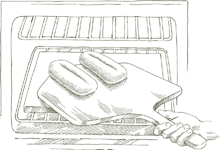

BEFORE THERE WAS an oven, there was bread. It was baked in the hearth, where the dough was flattened over a stone slab and covered with hot ashes. From this hearth bread—panis focacius (focus is Latin for hearth)—comes today’s soft, leavened focaccia.
Focaccia always starts out with an olive-oil enriched, salted dough, which may either be baked plain, or topped with onion, rosemary, sage, olives, bacon, and other flavorings. Focaccia is most closely associated with Liguria, the Italian Riviera, and with its principal city, Genoa. In many cities of the north, in fact, it is not called focaccia at all, but pizza genovese, Genoese-style pizza. In Bologna, however, if you are looking for focaccia, the appropriate word to use is crescentina; in Florence, Rome, and a few other parts of central Italy, it is schiacciata. If you ask for focaccia in Bologna or Venice, you will be given a very sweet panettone-like cake, studded with candied fruit and raisins.
THE DOUGH in the recipe given here produces a thick, tender focaccia with a crisp surface, which you can top with sautéed onion in the Genoese style, as described below, or vary in one of the alternative ways indicated, or devise a suitable variation of your own.
For 6 servings
FOR THE DOUGH
1 package active dry yeast
2 cups lukewarm water
6½ cups unbleached flour
2 tablespoons extra virgin olive oil
1 tablespoon salt
A heavy-duty rectangular metal baking pan, preferably black, about 18 by 14 inches or its equivalent
Extra virgin olive oil for smearing the pan
A baking stone
A mixture of ¼ cup extra virgin olive oil, 2 tablespoons water, and 1 teaspoon salt
A pastry brush
FOR THE ONION TOPPING
2 tablespoons extra virgin olive oil
4 cups onion sliced very, very thin
1. Dissolve the yeast by stirring it into ½ cup lukewarm water, and let it stand about 10 minutes or slightly less.
2. Combine the yeast and 1 cup of flour in a bowl, mixing them thoroughly. Then add the 2 tablespoons olive oil, 1 tablespoon salt, ¾ cup water, and half the remaining flour. Mix thoroughly until the dough feels soft, but compact, and no longer sticks to the hands. Put in the remaining flour and ¼ cup water, and mix thoroughly once again. When putting in flour and water for the last time, hold back some of both and add only as much of either as you need to make the dough manageable, soft, but not too sticky. On a very damp, rainy day, for example, you may need less water and more of the flour.
3. Take the dough out of the bowl, and slap it down very hard several times, until it is stretched out lengthwise. Reach for the far end of the dough, fold it a short distance toward you, push it away with the heel of your palm, flexing your wrist, fold it, and push it away again, gradually rolling it up and bringing it close to you. It will have a tapered, roll-like shape. Pick up the dough, holding it by one of the tapered ends, lift it high above the counter, and slap it down hard again several times, stretching it out in a lengthwise direction. Reach for the far end, and repeat the kneading motion with the heel of your palm and your wrist, bringing it close to you once more. Work the dough in this manner for 10 minutes. At the end, pat it into a round shape.
4. Smear the middle of the baking sheet with about 2 tablespoons olive oil, put the kneaded, rounded dough on it, cover it with a damp cloth, and leave it to rise for about 1½ hours.
5. For the topping: Put the 2 tablespoons of olive oil and all the sliced onion in a saute pan, turn the heat on to medium high, and cook the onion, stirring it frequently, until it is tender, but not too soft. It should still be slightly crunchy.
6. When the indicated rising time has elapsed, stretch out the dough in the baking pan, spreading it toward the edges so that it covers the entire pan to a depth of about ¼ inch. Cover with a damp towel and let the dough rise for 45 minutes.
7. At least 30 minutes before you are ready to bake, put the baking stone in the oven and preheat oven to 450°.
8. When the second rising time for the dough has elapsed, keeping the fingers of your hand stiff, poke the dough all over, making many little hollows with your fingertips. Beat the mixture of oil, water, and salt with a small whisk or a fork for a few minutes until you have obtained a fairly homogeneous emulsion, then pour it slowly over the dough, using a brush to spread it all the way out to the edges of the pan. You will find that the liquid will pool in the hollows made by your fingertips. Spread the cooked onion over the dough, and place the pan on the middle rack of the preheated oven. Check the focaccia after 15 minutes. If you find it is cooking faster on one side than another, turn the pan accordingly. Bake for another 7 to 8 minutes. Lift the focaccia out of the pan with spatulas, and transfer it to a cooling rack.
Serve focaccia warm or at room temperature that same day. It is preferable not to keep it longer, but if you must, it is better to freeze than to refrigerate. Reheat in a very hot oven for 10 to 12 minutes.
Food processor note  The preceding 2 steps may be carried out in the food processor, but the hand method, aside from the physical satisfactions it provides, produces a focaccia with better texture.
The preceding 2 steps may be carried out in the food processor, but the hand method, aside from the physical satisfactions it provides, produces a focaccia with better texture.
From the ingredients for the preceding recipe for Focaccia with Onions, omit the onions and their cooking oil, and omit the salt in the mixture of oil and water. Follow all the other steps of the recipe. After brushing the dough with oil and water, sprinkle over it 1½ teaspoons coarse sea salt. Bake as directed in the basic recipe.
From the ingredients for the recipe for Focaccia with Onions, omit the onions and their cooking oil, and add several short sprigs of rosemary. Make the focaccia as directed in the basic recipe. When you check its progress in the oven after 15 minutes, spread over it the small sprigs of rosemary, and finish baking.
From the ingredients for the recipe for Focaccia with Onions, omit the onions and their cooking oil, and add 20 fresh sage leaves, chopped rather fine, and several whole leaves. When stretching out the dough in the pan prior to its second rising, as directed in the basic recipe, work the chopped sage into the dough, distributing it as uniformly as possible. Bake the focaccia as directed in the basic recipe. When you check its progress after 15 minutes, spread over it a thin scattering of fresh whole sage leaves, and finish the baking.
From the ingredients for the recipe for Focaccia with Onions, omit the onions and their cooking oil, reduce the salt in the oil and water mixture to ½ teaspoon, and add 6 ounces black Greek olives. They should be the thin-skinned round ones that vary in color from dark brown to black. Do not use the purple, tapered Kalamata variety. Cut the olives all the way around their middle and loosen them from the pit, producing 2 detached halves from each olive. After you have poked hollows into the dough in the pan, as directed in the basic recipe, push the olives, cut side facing down, into the hollows, embedding them deeply into the dough, then brush the dough with the oil, water, and salt mixture. Bake the focaccia as directed in the basic recipe.
THERE IS a restaurant in Bologna whose tables, for nearly a century, have always been full. Their secret is solidly traditional cooking that satisfies that most solidly traditional of palates, the Bolognese. The restaurant is Diana, and the women in the kitchen there still roll out pasta by hand with the long Bolognese rolling pin, making incomparable tortellini, tagliatelle, and lasagne. While you wait for the tortellini, a waiter will put on your table a plate of thick mortadella cubes and sliced Parma ham, and squares of what is probably the most subtly savory of all focaccia, Bologna’s crescentina with bacon. The following recipe is adapted from Diana’s version. Here is an instance in which I prefer to use the food processor, because it does the best possible job of chopping the bacon and distributing it uniformly in the dough.
For 6 to 8 servings
¼ pound bacon, preferably choice quality slab bacon
1 ¼ teaspoons active dry yeast
1¼ cups lukewarm water
3¼ cups unbleached flour
1¼ teaspoons salt
A tiny pinch sugar
Extra virgin olive oil for oiling a bowl and pan
A 9- by 13-inch rectangular baking pan, preferably black
A pastry brush
1 egg, lightly beaten
1. Cut the bacon into pieces without stripping away any of the fat, put it into the food processor, and chop very fine. Do not take it out of the processor bowl.
2. Dissolve the yeast, stirring it into ¼ cup lukewarm water. When completely dissolved, in 10 minutes or less, put it into the processor bowl together with 1 cup of the flour, ½ cup lukewarm water, the salt, and the sugar. Turn on processor. While the blade is running, gradually add the rest of the flour and the remaining ½ cup water. Stop the processor when the dough masses together into a lump.
3. Use about 1 tablespoon olive oil to film the inside of a large bowl. Put the dough into the bowl, cover with plastic wrap, and place in a warm, protected corner to rise until it doubles in bulk, about 3 hours or slightly more.
4. When the dough has doubled in bulk, put the baking stone in the oven and preheat oven to 400°.
5. Thinly oil the bottom of the baking pan. Put the risen dough in the center, and gently spread it out with your fingers toward the sides until it completely covers the pan. Be careful not to make any thin spots, or they will burn through when baked. Cover the pan with plastic wrap, and put in a warm, protected corner for 30 to 40 minutes, until the dough rises some more.
6. Use a razor blade to cut a broad diamond-shaped, cross-hatched pattern into the top of the dough, then brush it with beaten egg. Don’t attempt to use all the egg. Place the pan on the preheated baking stone, and bake for 30 minutes, until the dough becomes colored a deep gold on top. Take out the pan and turn off the oven, but leave its door closed. Loosen the focaccia from the bottom of the pan with a long metal spatula, lift it out of the pan, and slide it onto the baking stone in the oven. Take the focaccia out after 5 minutes, and place on a cooling rack. Serve warm or at room temperature.
THE RECIPES for pizza dough are beyond numbering. Although some formulas are certainly better than others, none may credibly claim to be the ultimate one. What matters is knowing what you are looking for. I like pizza that is neither too brittle and thin nor too thick and spongy, a firm, chewy pizza with crunch to its crust. The dough that has satisfied my expectations most consistently is the single-rising one given below. I have never succeeded in getting the texture I like from pizza baked in pans, so I prefer to do mine directly on a baking stone.
For 2 round pizzas, about 12 inches wide, depending upon how thin you make them
1½ teaspoons active dry yeast
1 cup lukewarm water
3½ cups unbleached flour
Extra virgin olive oil, 1 tablespoon for the dough, 1 teaspoon for the bowl, and some for the finished pizza
½ tablespoon salt
A baking stone
A baker’s peel (paddle)
Cornmeal
1. Dissolve the yeast completely in a large bowl by stirring it into ½ cup lukewarm water. When dissolved, in 10 minutes or less, add 1 cup flour and mix thoroughly with a wooden spoon. Then, as you continue to stir, gradually add 1 tablespoon olive oil, ½ tablespoon salt, ¼ cup lukewarm water, and 1 cup more flour. When putting in flour and water for the last time, hold back some of both and add only as much of either as you need to make the dough manageable, soft, but not too sticky.
2. Take the dough out of the bowl, and slap it down very hard against the work counter several times, until it is stretched out to a length of about 10 inches. Reach for the far end of the dough, fold it a short distance toward you, push it away with the heel of your palm, flexing your wrist, fold it, and push it away again, gradually rolling it up and bringing it close to you. Rotate the dough a one-quarter turn, pick it up and slap it down hard, repeating the entire previous operation. Give it another one-quarter turn in the same direction and repeat the procedure for about 10 minutes. Pat the kneaded dough into a round shape.
3. Film the inside of a clean bowl with 1 teaspoon olive oil, put in the dough, cover with plastic wrap, and put the bowl in a protected, warm corner. Let the dough rise until it has doubled in volume, about 3 hours. It can also sit a while longer.
4. At least 30 minutes before you are ready to bake, put the baking stone in the oven and preheat oven to 450°.
5. Sprinkle the baker’s peel generously with cornmeal. Take the risen dough out of the bowl and divide it in half. Unless both your peel and your baking stone can accommodate two pizzas at once, put one of the two halves back into the bowl and cover it while you roll out the other half. Put that half on the peel and flatten it as thin as you can, opening it out into a circular shape, using a rolling pin, but finishing the job with your fingers. Leave the rim somewhat higher than the rest. An alternate method—and the best way to thin the dough, if you can emulate it, is the pizza maker’s technique. First roll out the dough into a thick disk. Then stretch the dough by twirling it on both your upraised fists, bouncing it from time to time into the air to turn it. When it is the desired shape, put the circle of dough on the cornmeal-covered peel.
6. Put the topping of your choice on the dough, and slide it, jerking the peel sharply away, onto the preheated baking stone. Bake for 20 minutes or slightly more, until the dough becomes colored a light golden brown. As soon as it is done, drizzle lightly with olive oil. (While the first pizza is baking, follow the same procedure for thinning the remaining dough and topping it, slipping it into the oven when the first pizza is done.)
Food processor note The previous two steps may be carried out in the food processor. Bear in mind that the hand method produces better dough, that it doesn’t take appreciably longer than does using and cleaning the processor, and it can be more enjoyable.

PIZZA IS MADE for improvisation and brooks no dogmas about its toppings. Throughout Italy and the world, armies of pizzaioli—pizza bakers—each day are forming new combinations, conscripting mushrooms, onions, chili pepper, exotic vegetables and fruits, ham, sausages, cheeses, seafood, whatever seems to stray within their reach. Some ingredients are less congenial than others, however, and some, such as goat cheese, for example, produce flavor that is wholly incongruous when judged by Italian anticipations of taste. Without smothering spontaneity, it may be helpful, when one wants to make pizza in an idiomatic Italian style, to refer from time to time to those few blends of ingredients that represent, in the place where the dish was created, the broadest and longest-established consensus on what tastes best on pizza.
Although some food historians, as historians are wont to do, dispute it, this most popular of all toppings is believed to have been created to please Italy’s Queen Margherita when she visited Naples, late in the nineteenth century. The colors, tomato red, mozzarella white, and basil green, are evidently the patriotic ones of the then still-new Italian flag. Incidentally, Margherita’s consort, Umberto I, seems to have been the only ruler among hundreds in the peninsula’s nearly three-thousand-year recorded history to have had his name graced by the suffix The Good. Without any reservations, one can attach it to the topping that bears the name of his queen.
Topping for 2 twelve-inch pizzas made with this dough
THE TOMATOES
1½ pounds fresh, ripe, firm plum tomatoes (see note below) OR 1½ cups canned imported Italian plum tomatoes, drained and cut up
2 tablespoons extra virgin olive oil
Note The authentic flavor of Naples’s pizza owes much to the very ripe, firm, fresh San Marzano plum tomatoes that go raw into the topping. In the brief season when local tomatoes of exceptional ripeness and firmness are available, omit the preliminary cooking procedure described in steps 1 and 2 below and use them as follows:
Skin the tomatoes raw with a swiveling-blade peeler, cut them into ½-inch-wide strips, discarding all seeds and any runny matter, and distribute them as they are over the pizza dough when you are ready to top it and bake it.
When working with tomatoes that do not quite meet that description, cook them down briefly, following the instructions that follow.
1. If using fresh tomatoes, wash them in cold water, skin them raw with a peeler, cut them into 4 pieces each, and discard all seeds and any runny matter. If using cut-up canned tomatoes, begin with the next step.
2. Put the tomatoes in a medium saute pan together with the olive oil, put a lid on the pan, and turn on the heat to medium. After 2 to 3 minutes, uncover the pan and cook for another 6 to 7 minutes, stirring frequently, until the tomatoes have lost all their watery liquid.
THE MOZZARELLA
½ pound mozzarella, preferably imported buffalo-milk mozzarella
OPTIONAL: depending on the mozzarella, 1 tablespoon extra virgin olive oil
If you are using buffalo-milk mozzarella, which is very high in cream content, or a high-quality, moist, locally made fresh mozzarella, omit the olive oil, and slice the cheese as thin as you can.
If you are using commercial quality, supermarket mozzarella, grate it on the large holes of a grater, or with the shredding disk of the food processor. Put it into a bowl with the olive oil, mix thoroughly, and let steep for 1 hour before using it in the topping.
THE OTHER INGREDIENTS
Salt
3 tablespoons extra virgin olive oil
2 tablespoons freshly grated parmigiano-reggiano cheese
14 fresh basil leaves
1. Applying the topping: If using this topping for 2 pizzas, divide all ingredients in two equal parts, and use one part, following the instructions below, to top the dough that is about to go into the oven.
2. Spread the tomatoes evenly over the top, sprinkle with a little salt, and drizzle with olive oil. Slide the dough in the oven and bake for 15 minutes.
3. Use 2 metal spatulas, one in each hand, to take the dough out of the oven, quickly top the tomato with mozzarella and grated Parmesan, in that order, then return to the oven.
4. In about 5 minutes, when the cheese has melted, take out the pizza, drizzle with a little olive oil, as described in Step 6 of the basic pizza recipe, and spread the basil leaves over it. Serve at once.
Oregano so frequently takes the place of basil in a Margherita topping that its pungent and stirring fragrance has become identified with pizza itself. Use fresh oregano if possible, 1 teaspoon of it, or ½ teaspoon if dried. Sprinkle it on the partly baked pizza at the same time you add the mozzarella and grated Parmesan. Omit the basil.
Marinara means sailor style. It signifies cooked in the manner used aboard ship, therefore, “yes” to olive oil and garlic, but “no” to cheese, which would be incompatible with the fresh food most available at sea, fish. Marinara is the most traditional of all pizza toppings, and when the tomatoes are ripe and meaty, the garlic fresh and sweet, and the olive oil dense and fruity, it probably can’t be surpassed.
Topping for 2 twelve-inch pizzas made with this dough
2 pounds fresh, ripe, firm plum tomatoes (see note) OR 3 cups canned imported Italian plum tomatoes, drained and cut up
Extra virgin olive oil, 3 tablespoons for the tomatoes plus more for the pizza
Salt
6 garlic cloves, peeled and sliced very thin
Oregano, 1 teaspoon if fresh, ½ teaspoon if dried
1. Prepare the tomatoes, following the instructions in the Margherita topping recipe.
2. If using this topping for 2 pizzas, divide all ingredients in two equal parts, and use one part, following the instructions below, to top the dough that is about to go into the oven.
3. Spread the tomatoes evenly over the top, sprinkle with a little salt, add the sliced garlic, and drizzle generously with olive oil. Slide the dough into the oven and bake until done, as described. When you take out the pizza, drizzle with a little olive oil, and sprinkle the oregano over it. Serve at once.
Pizza topped in this manner, without tomatoes, is called pizza bianca, white pizza. In Naples it is further qualified as alla romana, Roman style, because of the anchovies, whereas, in the paradoxical Italian manner, in Rome and everywhere else in the country, it is called alla napoletana, Neapolitan style.
Topping for 2 twelve-inch pizzas made with this dough
1 pound mozzarella, preferably imported buffalo-milk mozzarella
Extra virgin olive oil, 2 tablespoons optional, depending on the mozzarella, plus 2 tablespoons for the pizza
4 flat anchovy fillets (preferably the ones prepared at home as described), cut up not too fine
½ cup fresh basil leaves, torn into 2 or 3 pieces
2 tablespoons freshly grated parmigiano-reggiano cheese
Salt
1. See the comments on mozzarella in the Margherita topping recipe and follow the instructions there for its preparation, using the optional olive oil, if appropriate.
2. If you have grated the mozzarella, mix the cut-up anchovies with it; if you have sliced it, keep the anchovies separate. If using this topping for 2 pizzas, divide all ingredients in two equal parts, and use one part, following the instructions below, to top the dough that is about to go into the oven.
3. Top the dough with half of the mozzarella and anchovies that you have set aside for one pizza. Slide the dough in the oven and bake for 15 minutes.
4. Take the dough out of the oven, quickly top with the remainder of the mozzarella and anchovies reserved for that pizza, add the basil, the grated Parmesan, 1 tablespoon of olive oil, a pinch or two of salt, and return to the oven.
5. In about 5 minutes, when the cheese has melted, take out the pizza, drizzle with a little olive oil as described in Step 6 of the basic pizza recipe, and serve at once.


Sfinciuni is to Palermo what pizza is to Naples and to the rest of the world. A coarse version of sfinciuni is indistinguishable from pizza in appearance, a layer of baked dough supporting a topping. A finer and more fascinating rendition is known as sfinciuni di San Vito, after the nuns of that order who are credited with creating it. It has two thin, round layers of firm dough that enclose a stuffing—called the conza—which are sealed all around. The San Vito conza has meat and cheese, but one can also make other excellent stuffings with vegetables instead of meat.
Dough for a thin 10- to 12-inch double-faced sfinciuni
SFINCIUNI DOUGH
1 teaspoon active dry yeast
¾ cup lukewarm water
2 cups unbleached flour
A tiny pinch sugar
1 teaspoon salt
Extra virgin olive oil, 1 tablespoon for the dough plus some for the bowl
2 tablespoons whole milk
1. Dissolve the yeast completely in a large bowl by stirring it into ¼ cup lukewarm water. When dissolved, in 10 minutes or less, add 1 cup flour and mix thoroughly with a wooden spoon. Then, as you continue to stir, add ¼ cup lukewarm water, a small pinch of sugar, 1 teaspoon salt, 1 tablespoon olive oil, and 2 tablespoons milk. When all the ingredients have been smoothly amalgamated, add ¼ cup lukewarm water and the remaining 1 cup flour, and mix thoroughly once again, until the dough feels soft, but compact, and no longer sticks to the hands.
2. Take the dough out of the bowl, and slap it down very hard against the work counter several times, until it is stretched out into a long and narrow shape. Reach for the far end of the dough, fold it a short distance toward you, push it away with the heel of your palm, flexing your wrist, fold it, and push it away again, gradually rolling it up and bringing it close to you. Rotate the dough a one-quarter turn, pick it up, and slap it down hard, repeating the entire previous operation. Give it another one-quarter turn in the same direction and repeat the procedure for about 10 minutes. Pat the kneaded dough into a round shape.
3. Film the inside of a clean bowl with 1 teaspoon olive oil, put in the dough, cover with plastic wrap, and put the bowl in a protected, warm corner. Let the dough rise until it has doubled in volume, about 3 hours. While the dough is rising you can prepare the conza.
Food processor note The previous two steps may be carried out in the food processor.
CONZA DI SAN VITO—MEAT AND CHEESE FILLING
3 tablespoons extra virgin olive oil
½ cup onion sliced very thin
½ pound ground beef, preferably chuck
Salt
Black pepper, ground fresh from the mill
½ cup dry white wine
⅓ cup cooked unsmoked ham chopped rather coarse
½ cup imported Italian fontina cheese diced very fine
¼ cup fresh ricotta
Note Palermo’s primo sale and fresh caciocavallo cheeses that are both part of this stuffing are not yet, as I write, available outside Sicily. I have replaced them with a combination of fontina and ricotta to achieve mild flavor with a tart accent. I think it works, but if you have other ideas, try them out.
1. Put the olive oil and onion in a saute pan and turn on the heat to medium high. Stir occasionally, and cook until the onion becomes colored a deep, dark gold. Add the ground beef, salt, and a few grindings of pepper. Crumble the meat with a fork and cook it, stirring frequently, until it loses its raw, red color.
2. Add the wine, turn the heat down a little, and continue cooking until all liquid has simmered away. Transfer the contents of the pan to a bowl, and set aside to cool.
3. When cool, add the ham, fontina, and ricotta to the bowl and toss thoroughly until all ingredients have been evenly combined.
ASSEMBLING AND BAKING THE SFINCIUNI
A baking stone Cornmeal
A baker’s peel (paddle)
2 tablespoons plain, unflavored bread crumbs, lightly oasted
1 tablespoon extra virgin olive oil
A pastry brush
1. At least 30 minutes before you are ready to bake—the dough will have been rising for about 2½ hours—put the baking stone in the oven, and preheat oven to 400°.
2. Sprinkle cornmeal on the baker’s peel.
3. When the dough has doubled in volume, divide it in half. Wrap one half in plastic wrap, and put the other half on the peel. Use a rolling pin to flatten it out into a circle at least 10 inches in diameter. The rim should be no thicker than the rest of the disk.
4. Distribute 1 tablespoon of bread crumbs over the dough and 1 teaspoon olive oil, stopping about ½ inch short of the edge. Spread the meat and cheese conza over it, again stopping short of the edge, and top the filling with 1 tablespoon bread crumbs and 2 teaspoons olive oil.
5. Unwrap the remaining dough, put it on a lightly floured work surface, and roll it out into a disk large enough to cover the first. Place it over the stuffing and crimp the edges of the two circles of dough securely together, bringing the edge of the lower one up over that of the top one.
6. Brush the top of the dough with water, then slide the sfinciuni off the peel and onto the preheated baking stone. Bake for 25 minutes. After removing it from the oven, let it settle for 30 minutes to allow the flavors of the stuffing sufficient time to come together and develop. Cut into pie-shaped wedges and serve.

Sfinciuni are exceptionally good with vegetables in the conza, or filling. A few particularly apt combinations are described below. They all must be cooked in advance, which you should plan on doing sometime during the 3 hours the dough needs to rise.
Filling for 1 ten- to twelve-inch sfinciuni
1 pound fresh, ripe, firm plum tomatoes OR 1½ cups canned imported Italian plum tomatoes, drained of juice and chopped
2 cups onion sliced very thin
3 tablespoons extra virgin olive oil
Salt
Black pepper, ground fresh from the mill
6 flat anchovy fillets (preferably the ones prepared at home as described), chopped to a pulp
Oregano, 1 teaspoon if fresh, ½ teaspoon if dried
LATER, ON THE SFINCIUNI
1 tablespoon extra virgin olive oil
¼ cup plain, unflavored bread crumbs, lightly toasted
AND
The dough made using this recipe
PLUS
A baking stone
Cornmeal
A baker’s peel (paddle)
A pastry brush
1. Use fresh tomatoes only when they are truly ripe, sweet, and meaty. If they answer that description, wash them in cold water, skin them raw with a swiveling-blade peeler, discard the seeds and all watery pulp, cut them into strips ½ inch wide, and set them aside. If using canned tomatoes, proceed to the next step.
2. Put the onion and 3 tablespoons olive oil in a medium saute pan, turn on the heat to medium, and cook the onion, stirring occasionally, until it becomes colored a light gold. Add either the strips of fresh tomatoes or the drained, chopped canned tomatoes, salt, 2 or 3 grindings of pepper, turn over the ingredients 2 or 3 times, and turn the heat up to medium high. Cook, stirring from time to time, until the oil floats free of the tomatoes, about 15 minutes.
3. Turn the heat down to the minimum, add the chopped anchovy pulp, stir for a minute or a little less, then turn off the heat completely. Add the oregano, stir, and set aside to cool.
4. At least 30 minutes before you are ready to bake—the dough will have been rising for about 2½ hours—put the baking stone in the oven, and preheat oven to 400°.
5. Sprinkle cornmeal on the baker’s peel, then proceed to roll out the dough and assemble the sfinciuni as described, with the following adjustments for this particular stuffing:
• Sprinkle 2 tablespoons of bread crumbs over the bottom round of dough.
• Use a slotted spoon or spatula to lift the tomato and anchovy mixture out of the pan so that as much cooked oil as possible is left behind.
• When you have spread the tomato and anchovy over the dough, top it with 2 tablespoons of bread crumbs and drizzle over it 1 tablespoon of fresh olive oil.
Cover the filling with the remaining dough, seal the sfinciuni, brush the top layer of dough with water, bake it, and serve it as described in the basic recipe.
Filling for 1 ten- to twelve-inch sfinciuni
1 medium bunch fresh broccoli, about 1 pound
Salt
2 teaspoons chopped garlic
¼ cup extra virgin olive oil
LATER, ON THE SFINCIUNI
2 tablespoons plain, unflavored bread crumbs, lightly toasted
¾ cup fresh ricotta
¼ cup freshly grated parmigiano-reggiano cheese
1 tablespoon extra virgin olive oil
The dough made using this recipe
PLUS
A baking stone
Cornmeal
A baker’s peel (paddle)
A pastry brush
1. Cut off ½ inch of the tough butt end of the broccoli stalks. Pare away the dark green skin from the stalks and the thicker stems.
2. Bring 3 quarts of water to a boil, add salt, and put in the broccoli. Cook for 5 to 7 minutes after the water returns to a boil, depending on the size and freshness of the broccoli. It will undergo additional cooking later, so it should be quite firm at this stage.
3. Drain and chop the broccoli stems and florets into pieces no larger than 1 inch.
4. Put the garlic and ¼ cup olive oil in a medium saute pan, turn on the heat to medium, and cook the garlic, stirring once or twice, until it becomes colored a light gold. Add the chopped broccoli, sprinkle with salt, and cook for 5 minutes, turning the vegetable over frequently to coat it well. Take off heat and set aside to cool completely.
5. At least 30 minutes before you are ready to bake—the dough will have been rising for about 2½ hours—put the baking stone in the oven, and preheat oven to 400°.
6. Sprinkle cornmeal on the baker’s peel, then proceed to roll out the dough and assemble the sfinciuni as described, with the following adjustments for this particular stuffing:
• Sprinkle 1 tablespoon of bread crumbs over the bottom round of dough.
• Spread the ricotta over the bread crumbs.
• Use a slotted spoon or spatula to lift the broccoli out of the pan so that as much of the cooking oil as possible is left behind. Spread the broccoli out over the ricotta, then sprinkle the grated Parmesan over it. Follow it with 1 tablespoon of bread crumbs, and top by drizzling 1 tablespoon of olive oil over the crumbs.
Cover the filling with the remaining dough, seal the sfinciuni, brush the top layer of dough with water, bake it, and serve it as described in the basic recipe.
For a more explicit broccoli flavor than the filling in the preceding recipe, omit the ricotta entirely and increase the grated Parmesan to ½ cup. Sprinkle the Parmesan over the broccoli after spreading the vegetable over the dough.

IF YOU FOLLOW the eastern-bound course of the Po river, Italy’s largest, as it slices much of northern Italy in two, with parts of Lombardy and the Veneto on its left bank, and Emilia-Romagna on its right, you will be traveling across some of the country’s best bread territory, once studded with flour mills powered by the river’s currents.
These handsome loaves, notable for their fine, crisp, tasty crust, and soft crumb are popular on both the Emilia and the Lombardy side, but take their name from the ancient ducal town of Mantua, in Lombardy.
2 mantovane loaves
2 teaspoons active dry yeast
2 cups lukewarm water
¼ teaspoon sugar
About 5 cups unbleached flour
2 teaspoons salt
1 tablespoon extra virgin olive oil
A baking stone
A baker’s peel (paddle), 16 by 14 inches, OR a cookie sheet OR large piece of stiff cardboard
Cornmeal
A pastry brush
1. Dissolve the yeast completely in a large bowl by stirring it into ¼ cup lukewarm water with the ¼ teaspoon sugar added. When dissolved, in 10 minutes or less, add 2 cups flour and ¼ cup water, and mix thoroughly with a wooden spoon.
2. If kneading by hand: Pour the contents of the bowl onto a lightly floured work surface, and knead steadily for about 10 minutes. Push forward against the dough, using the heel of your palm and keeping your fingers bent. Fold the mass in half, give it a quarter turn, press hard against it with the heel of your palm again, and repeat the operation. Make sure that you keep turning the ball of dough always in the same direction, either clockwise or counterclockwise as you prefer. Add a little more flour, if you find it necessary to make the dough workable, and dust your hands with flour if they stick to the dough. Knead until the dough is no longer sticky, but smooth and elastic. It should spring back when poked with a finger. Shape it into a ball.
If using the food processor: Pour 2 cups flour into the processor bowl, with the steel blade running add the dissolved yeast gradually, together with ¾ cup water. When the dough comes together forming a lump on the blades, take it out and finish kneading it by hand for 1 or 2 minutes.
3. Choose an ample bowl, dust the inside lightly with flour, and put in the dough. Wring out a wet cloth towel, fold it in two, and cover the bowl with it. Place the bowl in a warm, draft-free place, and let it rest for about 3 hours, until it has doubled in bulk.
4. If kneading by hand: Pour the remaining 3 cups flour onto the work surface. Place the risen ball of dough over the flour, punching it down and opening it with your hands. Pour the remaining 1 cup lukewarm water over it, and add the salt and the olive oil. Knead steadily as described above.
If using the food processor: Pour the remaining flour into the processor’s bowl. Put in the risen dough, and the salt, and gradually add first the 1 cup lukewarm water, then the salt and the olive oil, while running the steel blades. Take out the dough when it forms a lump on the blades, and finish kneading it by hand for 1 or 2 minutes.
5. Return the kneaded dough to the floured bowl, cover it with a damp towel, and let it rest until it has doubled in bulk again, about 3 more hours.
6. Thirty or more minutes before you are ready to bake, put the baking stone in the oven and preheat oven to 450°.
7. When the dough has again risen to double its bulk, take the dough out of the bowl, and slap it down very hard several times, until it is stretched out lengthwise. Reach for the far end of the dough, fold it a short distance toward you, push it away with the heel of your palm, flexing your wrist, fold it, and push it away again, gradually rolling it up and bringing it close to you. It will have a tapered, roll-like shape. Pick up the dough, holding it by one of the tapered ends, lift it high above the counter, and slap it down hard again several times, stretching it out in a lengthwise direction. Reach for the far end, and repeat the kneading motion with the heel of your palm and your wrist, bringing it close to you once more. Work the dough in this manner for 8 minutes.
8. Divide the dough in half, shaping each half into a thick, cigar-shaped roll, quite plump at the middle and tapered at the ends. Sprinkle the peel (or the suggested alternatives) thinly with cornmeal, making sure the meal is well distributed over the surface. Place both shaped loaves on the peel, cover with a damp towel, and let them rest 30 to 40 minutes.
9. With a sharp knife or a razor blade, make a single lengthwise slash 1 inch deep along the top of each loaf. Brush the upper surface of the dough with a pastry brush dipped in water. Slide the loaves from the peel onto the preheated baking stone. Bake for 12 minutes, then turn the oven down to 375° and bake for 45 minutes more. When done, transfer the loaves to a cooling rack, and let the bread cool completely before cutting and serving it.

THE ITALIAN adjective integrale shares the same root as “integrity” in English, and it is customarily applied to whatever can be described as whole and unmixed. When applied to bread it means whole-wheat bread, which is, however, as you will find here, not unmixed at all, but made only partly from whole wheat.
Use all the ingredients from the recipe for Olive Oil Bread, except for the following proportions of flour:
1 round loaf Italian whole-wheat bread
1¾ cups stone-ground fine whole-wheat flour, free of any coarse bits of bran or kernel
About 3¼ cups unbleached flour
Follow the exact procedure given in the recipe for Olive Oil Bread, using whole-wheat and white flour in the proportions given here. Instead of shaping the dough into 2 tapered loaves, form it into a slightly domed round loaf. When it has rested, cut a shallow cross on top. Brush with water and bake as directed in the basic recipe.
THE GOLDEN FLOUR of hard or durum wheat is in the opinion of many, among them the late James Beard, the choicest of bread flours because of its high proportion of gluten. It makes a very fine-textured and fragrant bread, with a biscuity quality, that tastes even better when reheated and used a day after it is made.
Use all the ingredients from the recipe for Olive Oil Bread, substituting 5 cups fine hard-wheat flour for the unbleached white flour.
1 ring-shaped loaf hard-wheat bread
Follow the exact procedure given in the recipe for Olive Oil Bread. Instead of shaping the dough into 2 tapered loaves, form it into a doughnut-like large ring with a hole the center about 3½ inches in diameter. When it has rested, put in a row of small diagonal cuts all around the top of the ring. Brush with water and bake as directed in the basic recipe.
AMONG THE SAVORY riches of regional Italian cooking, nothing can excite our wonder more than the toothsome diversity of its country breads. In this field, which few have yet broadly explored, one of the most talented researchers is Margherita “Mita” Simili, who is famous in Bologna, along with her sister Valeria, for the bakery they both used to run and for the baking classes they now teach. We have made pizza, focaccia, and bread together, developing doughs that are in this chapter.
Some of the best bread flour in the world is produced in Apulia, the spur and heel of the boot-shaped Italian peninsula. It was on a visit there that Mita acquired the recipe for Apulian olive bread, a product of the baker’s craft that proves irresistible from the first bite. The method makes use of a starter dough known as biga. Biga, made from a small quantity of yeast and flour that is given an overnight rising, is the foundation on which Italian country bakers often build their breads. It acts upon the dough to which it is added in a manner similar to that of natural, ambient yeast, bestowing on the finished loaf exceptional flavor, fragrance, and airiness.
Food processor note: In this recipe, the dough is worked entirely by hand. It is not at all a lengthy process, just rather sticky because of the consistency of the dough, but it produces bread with better texture than the food processor does. If you must, you can use the processor for all the kneading steps, after you have made the starter.
1 round loaf Apulian olive bread
FOR THE STARTER (BIGA)
½ teaspoon active dry yeast
½ cup lukewarm water
1¼ cups unbleached flour
Extra virgin olive oil
FOR THE DOUGH
5 ounces black, round Greek olives, see description in Focaccia with Black Greek Olives
1½ cups lukewarm water
1½ teaspoons active dry yeast
3¾ cups unbleached flour
2 teaspoons salt
1 tablespoon extra virgin olive oil
PLUS
A baking stone
A baker’s peel (paddle)
Cornmeal
1. For the starter: In a bowl dissolve the ½ teaspoon yeast by stirring it into ½ cup lukewarm water. When it has dissolved completely, about 10 minutes or less, add the 1¼ cups flour and stir thoroughly with a wooden spoon to distribute the yeast uniformly in the flour.
2. Transfer the dough to a bowl lightly filmed with olive oil, cover tightly with plastic wrap, and place the bowl in a place protected equally from cold draughts and heat. Let it rise overnight for 14 to 18 hours, until it has more than doubled in volume.
3. When ready to proceed, start to prepare the dough by cutting the olives all the way around their middles and loosening them from the pits. Pull the olives apart any way they come.
4. Put ½ cup of the lukewarm water in a large bowl and stir into it the 1½ teaspoons dry yeast. When it has completely dissolved, add to the bowl half the biga (starter), 1¼ cups of the flour, and the 2 teaspoons salt, and mix with a spatula until all ingredients are well integrated. Then add the remaining 2½ cups flour and the remaining 1 cup lukewarm water, pouring it in gradually, while mixing steadily with the spatula. Add the pitted olives and continue to mix the dough, occasionally lifting it out of the bowl with the spatula, then slapping it back in. Mix the dough in this manner until it comes easily loose from the bowl, about 8 minutes or so.
5. Dust a work counter lightly with flour, and turn out the dough from the bowl onto the counter. Work the dough for a few minutes with the spatula, slipping the spatula under the edges and folding them over toward the center. Move the spatula over each time until you have circled the whole mass of dough and folded the edges over at least once. Dust the work surface with flour occasionally if necessary to keep the dough from sticking.
6. Put 1 tablespoon olive oil in a clean bowl, put the dough into the bowl, and turn it in all directions until it is evenly coated with oil. Dampen a towel, wring out excess moisture, and cover the bowl with it. Put the bowl in a warm, protected corner for about 3 hours, until it has approximately doubled in volume.
7. Dust the work counter with flour, and turn the dough in the bowl out on it. Dust your hands with flour and use the palms to flatten the dough to a thickness of about 1½ inches. With both hands, lift the edge of the dough furthest from you and fold it toward you, stopping about one-third of the way from meeting the edge close to you. Stick your thumbs out straight and horizontally, parallel to your body, bringing their tips together, and use them to push out the folded-over dough toward its original position. Perform this operation 3 times, then rotate the dough a one-quarter turn, and repeat the step 3 more times. Periodically you will need to dust the counter and your hands with flour.
8. Rotate and pat the dough to form a more or less round shape. Turn a bowl upside down over it, covering it entirely, and let it rise for 1 full hour. At least 30 minutes before you will be ready to bake, put the baking stone in the oven and preheat oven to 425°.
9. When the final rising time is over, spread cornmeal thinly over the baker’s peel, put the ball of dough on the peel, and slide it into the oven onto the preheated stone. After 3 minutes, turn the oven down to 400°. In 20 minutes, turn the oven down again, to 375°. Bake for another 40 minutes. Let the bread cool down completely on a rack before using. When it has cooled off, you can freeze it, if you like. This bread seems to mature in the freezer and once it is reheated in a very hot oven, it tastes even better, if possible, than when it was just baked.
Piadina is a thin flat bread, chewy, but tender and not brittle. Until quite recently, it was the everyday bread for Romagna’s farmers, whose women baked it in the hearth on a terra-cotta slab over hot coals. It goes well with prosciutto or country ham, with salami, with pan-fried sausages, but it is at its surpassing best with these garlicky, sautéed greens.
Farm women in Romagna—the narrow, fertile plain between the hills and the sea on the northern Adriatic—still make piadina. Sometimes, on a Sunday, they make it for themselves, but more frequently they cook it on street corners for the summer people who crowd the seaside towns of Rimini, Riccione, and Cesenatico. It has now become the smart thing for Italian families in Romagna to dine in nostalgically rustic style at some converted farmhouse, where the standard menu of homemade pasta and roast chicken or rabbit is invariably preceded by platters piled high with wedges of piadina, accompanied by thick, hand-cut slices of salami or coppa. It is the kind of meal I put together for my own family from time to time, and for those friends on whose appreciation of casual, earthy food I can count.
What to cook piadina on Even in Romagna, the original, but fragile terra-cotta slab called testo on which the thin disk of dough was grilled, is being replaced with heavy, flat steel griddles. At home, one can use a heavy, black, cast-iron skillet. Heat it up gradually until it becomes very hot, but not fiery. It must be hot enough to cook piadina quickly, but not so hot that it merely scorches it.
For this purpose, however, metal can’t quite match earth or stone. If you travel to Italy, traditional housewares shops in the towns of Romagna, and in Emilian cities such as Bologna, still carry the terra-cotta testo. Since it is fragile, but cheap, it is a good idea to buy at least two. In North America, Vermont soapstone griddles do the job every bit as well as terra-cotta, and are much sturdier. One mail-order source that Julia Child originally put me on to is the Vermont Country Store, Weston, Vermont 05161.
For 6 servings
1. If using lard, heat it gently in a small saucepan until it has melted completely, but do not let it simmer. If using olive oil, proceed to the next step.
2. Pour the flour onto a work surface, shape it into a mound, make a hollow in its center, and pour into it the melted lard or the olive oil together with all the other ingredients. Draw the sides of the mound together, mixing thoroughly with your hands, and knead for 10 minutes as described in the recipe for Olive Oil Bread.
3. When the dough is no longer sticky and has become smooth and elastic, you can either wrap it tightly in plastic wrap and return to it 1 or 2 hours later, or else proceed at once, as follows: Cut it into pieces each about the size of an extra-large egg, about 6 to 7 pieces for the quantity of dough produced with this recipe. Roll out each piece of dough into a very thin disk about 1/16 inch thick.
4. Over medium heat, heat up the cast-iron skillet or the soapstone griddle until it is hot enough to make a drop of water skip. If you are using a skillet, you will need to adjust the heat periodically because iron does not retain heat as steadily and evenly as stone. Place one of the disks of dough on it, cook without moving it for 10 seconds, then turn it over with a spatula and cook the other side, without moving it, another 10 seconds. (The side that was next to the grilling surface should be speckled with a scattering of black spots; if it is blackened over a large area, turn the heat down a little.) When the piadina has cooked for 10 seconds on each side, prick it here and there with a fork, and continue cooking for 3 or 4 minutes, rotating it frequently to keep it from being scorched and flipping it over from time to time to cook it evenly on both sides. When done it should have a dull, parched, white surface mottled by random burn marks.
5. Take the piadina off the fire, cut it into 4 pie-like wedges, and prop them up anywhere where they can stand on their curved edge, letting air circulate around the wedges while you cook another piadina. Repeat the procedure until all the disks of dough are done. Serve as promptly as possible, preferably while still warm. If necessary, piadina wedges can be reheated in a very hot oven.

Consum, both the word and the dumpling it designates, are not to be found outside of Romagna. The dough closely resembles that of another native Romagna product, piadina, and the cooking method is identical, over the same sort of flat griddle. The robustly savory stuffing is a mixture of greens sautéed in garlic and olive oil.
For 6 servings, 6 or 7 dumplings
FOR THE STUFFING
Make the Sautéed Mixed Greens with Olive Oil and Garlic from this recipe, using 3 pounds of greens divided as follows:
2 pounds “sweet” greens, such as Swiss chard, spinach, or Savoy cabbage
1 pound “bitter” greens, preferably cime di rapa, also known as broccoletti di rapa or rapini, OR Catalonia chicory OR dandelion
FOR THE DOUGH
All the ingredients required for making Piadina
FOR COOKING
A cast-iron skillet or a soapstone griddle (see note)
1. Follow the directions in the piadina recipe to prepare the dough and roll it into thin disks about 6 to 7 inches in diameter.
2. Over one-half of each disk spread a ½-inch thick layer of sautéed greens, drained of their cooking oil. Fold the other half of the disk over the greens, to meet the edge of the lower half, thus making a large half-moon-shaped dumpling. Seal the edges tightly together, pressing them down with your thumb or using a pastry crimper.
3. Heat up the skillet or griddle as described in Step 4 of the piadina recipe. When hot, put on it 2 dumplings, or 3 if they fit. Cook them 4 to 5 minutes altogether, turning them frequently, and using a pair of tongs to stand them on edge briefly. They are done when the dough is a dull, parched, white mottled by random burn marks. Serve promptly.
Note The dough for consum can be thinned out through the rollers of a pasta machine set to obtain a thickness no greater than ⅛ inch. If it is easier for you, you can cut the dough into squares and make the dumplings triangular in shape, or even rectangular. As long as the dough is all the same thickness, and the dumplings are more or less the same size, the shape is not important.
When consum are fried they become cassoni, and they are very, very good. Prepare them exactly as described above, but if you are using melted lard in the dough, reduce it to 1½ tablespoons. Fry the dumplings in vegetable oil, if you prefer, but they are most delicious and crisp when fried in hot lard.
THERE IS no exact equivalent abroad for the fresh, tart, savory cheese one would use in Italy as the filling of these focaccette. I have tried to come close by combining fontina, for its silkiness and delicacy, Parmesan, for flavor and fullness, and ricotta, for its tart accent. If you have access to other cheeses that you think would produce a similar or possibly even more appealing mixture of soft, rich flavor and piquant freshness, try them.
For 4 to 5 servings
FOR THE DOUGH
1 cup flour
1 tablespoon extra virgin olive oil
½ teaspoon salt
5 tablespoons warm water
FOR THE FILLING
3 tablespoons imported Italian fontina cheese, chopped fine
7 tablespoons fresh ricotta
2 tablespoons freshly grated parmigiano-reggiano cheese
Salt
Black pepper, ground fresh from the mill
PLUS
1 egg white
Vegetable oil
1. For the dough: Pour the flour onto a work surface, shape it into a mound, and push down its center to form a hollow. Into the hollow put the olive oil, salt, and lukewarm water, and draw the sides of the mound together, mixing all ingredients well with your hands. Knead for 8 minutes. Shape the dough into a ball, and put it in a bowl. Cover the bowl with a plate or a cloth towel, and let the dough rest for about 2 hours.
2. For the filling: Combine the three cheeses in a bowl, adding to them a pinch of salt and a few grindings of pepper.
3. When the dough has rested the 2 hours, flatten it into a not too thin sheet with a rolling pin. At first it may fight you, but it should soon relax and open out easily. If you prefer, you can thin it through the rollers of a pasta machine, stopping at the setting that produces dough 1/16 inch thick.
4. Cut the sheet of dough into rectangles about 3¼ to 4 inches wide and 6 to 7 inches long. Over half of each rectangle, spread a thin layer of the cheese mixture, about 2 teaspoonfuls. Fold the other half of the rectangle over the cheese, joining it edge to edge with the lower half. Pinch the edges together, then dip a fingertip into the egg white and brush it over the edges to ensure a tight seal.
5. As you finish filling and sealing each fritter, lay it on a clean, dry cloth towel spread out on the counter. If you are not ready to fry them immediately, turn them from time to time to keep them from sticking to the towel. Do not overlap them or stack them.
6. Pour enough oil into the frying pan to come ½ inch up its sides, and turn on the heat to high. When the oil is very hot, slip in as many focaccette at one time as will fit loosely without crowding the pan. Fry them to a golden color on one side, then turn them and do the other side. Often the fritters will puff up and parts of them may jut above the oil level. Use a long-handled wooden spoon to tip them over and dunk them under the hot oil so that they fry as evenly as possible all over.
7. With a slotted spoon or spatula, transfer them to a cooling rack to drain or to a platter lined with paper towels. If there are more focaccette left to fry, repeat the procedure until they are all done. Serve promptly.
Note Use caution when you take your first bite: The cheese oozes out quickly and it may be scalding.
A GREAT VARIETY of savory fillings can be put into these dumplings that look like large triangular ravioli. One of the tastiest combinations is strips of raw tomatoes with anchovies and capers. Another is cheese and chopped parsley. Once you have tried the basic versions and seen how they work, you can devise your own fillings. You might try putting in thin strips of fried eggplant and roasted peppers. Or mushrooms sautéed in garlic and olive oil. With taste and imagination, you can easily dream up many more.

TOMATO FILLING FOR 20 DUMPLINGS
⅓ cup fresh, ripe, firm tomatoes, skinned raw, seeded, and cut into strips about ½ inch wide and 1½ inches long
2 tablespoons capers, rinsed if packed in salt, drained if in vinegar, chopped unless very small
10 flat anchovy fillets (preferably the ones prepared at home as described), cut in two
CHEESE FILLING FOR 20 DUMPLINGS
2 tablespoons chopped parsley
3 ounces mild cheese and 2 ounces savory cheese, cut into very thin strips, or slivers, or grated, or crumbled, depending on the cheese
• Mozzarella and Parmesan
• Ricotta and Gorgonzola
• Smoked Mozzarella and Fontina
• Gruyère and Taleggio
Note When using either the tomato or the cheese filling, keep all the ingredients separate in individual small bowls or saucers.
THE DOUGH FOR ABOUT 20 DUMPLINGS
1½ cups unbleached flour
½ teaspoon salt
½ teaspoon baking powder
1 tablespoon extra virgin olive oil
⅓ cup lukewarm water
PLUS
Vegetable oil for frying
1. For the dough: Pour the flour onto a work surface, shape it into a mound, and push down its center to form a hollow. Into the hollow put the salt, baking powder, olive oil, and lukewarm water. Draw the sides of the mound together, mixing all ingredients well with your hands. Knead for 10 minutes, until the dough loses its stickiness and is smooth and elastic.
2. Flatten the dough into a not too thin sheet with a rolling pin or, if you prefer, you can thin it through the rollers of a pasta machine, stopping at the setting that produces dough 1/16 inch thick. Trim the sheet of dough along the edges to give it a regular, rectangular shape. Briefly knead the trimmings into a small ball, and roll it out or thin it in the pasta machine. Trim it to give it the same rectangular shape as the rest of the dough.
3. Cut the dough into 3-inch squares, or as close to it as you can. Take a little bit of each of the components of the filling you are using from the individual bowls or plates and place it in the center of each square. Try to judge how much you are going to have to put into each square to make the filling come out evenly distributed. Fold the squares over on the diagonal, forming triangles. Seal the edges securely tight, pressing them with your fingers or with a pastry crimper. It is essential to stuff and seal the dumplings as soon as the dough has been rolled out, otherwise it will dry out. If it has begun to do so and you are having difficulty sealing the edges, moisten them very lightly with water.
4. As you finish filling and sealing each dumpling, lay it on a clean, dry cloth towel spread out on the counter. If you are not ready to fry them, turn them from time to time to keep them from sticking to the towel. Do not overlap them or stack them.
5. Pour enough oil into the frying pan to come ½ inch up its sides, and turn on the heat to high. When the oil is very hot, slip in as many dumplings at one time as will fit loosely without crowding the pan. Fry them to a golden color on one side, then turn them and do the other side. Often the dumplings will puff up and parts of them may jut above the oil level. Use a long-handled wooden spoon to tip them over and dunk them under the hot oil so that they fry as evenly as possible all over.
6. With a slotted spoon or spatula, transfer them to a cooling rack to drain or to a platter lined with paper towels. If there are more left to fry, repeat the procedure until all the dumplings are done. Serve while hot, but not scalding.